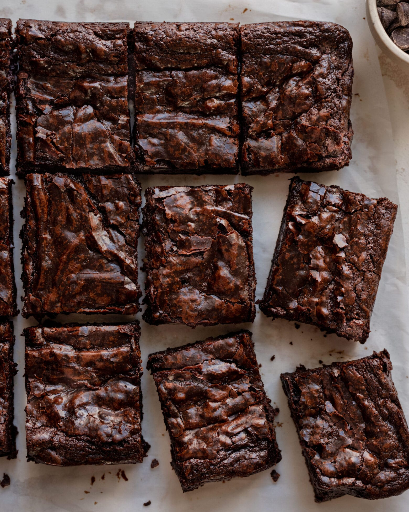

Vegan Brownies

Best vegan brownies ever!
That is what the website claims. I don't mind eating normal brownies. But these brownies actually look pretty good.
Ingredients
- Aquafaba
- Sugar
- Dark chocolate, roughly chopped
- Vegan butter
- All purpose flour
- Cocoa powder
- Sea salt
- Vanilla extract
Steps
- Line a 20 by 20 cm square metal baking pan with parchment paper and ensure there is some overhang on the sides (this will make it easy to lift the brownies out of the pan). Preheat the oven to 176°C.
- Sift the flour and cocoa powder together in a medium bowl.
- Add the aquafaba and sugar to a large mixing bowl. Use an electric handheld mixer or a stand mixer on high speed and beat the mixture for 2 ½ to 3 minutes until thickened, glossy, and wavy ribbons frequently appear in the bowl.
- Add in the vanilla and salt, and fold with a silicone spatula until well combined.
- Assemble a double boiler. Grab a heatproof bowl that can be nestled into a saucepan. Fill the saucepan up with a few inches of water, not so much that the bottom of the bowl would touch the water. Heat the water on the stove and keep at a rapid simmer.
- Add the chopped dark chocolate and cubed vegan butter to the bowl on top of the saucepan. Allow the chocolate mixture to melt, whisking occasionally until smooth and the chocolate is completely melted. Once the chocolate is completely melted, keep the bowl on the saucepan for an additional 30 to 60 seconds to further warm through.
- Pour the warm butter-chocolate mixture over the aquafaba-sugar mixture and fold together with the silicone spatula.
- Add the flour-cocoa mixture to the wet ingredients and stir until just combined. Stop mixing once the flour traces are gone. Pour the batter into the lined pan and smooth out the surface with the spatula.
- Bake the brownies in the preheated oven for 34 to 37 minutes, or until a toothpick inserted in the middle comes out with some moist crumbs and/or a tiny bit of thick batter. If the batter is liquidy or runny, though, the brownies need about 5 more minutes in the oven.
- Transfer the brownies to a wire rack to cool for 30 minutes. Then carefully lift the brownies out of the pan using the parchment paper handles onto the wire rack. Allow to cool for a further 20 to 30 minutes before slicing. Slice the brownies and enjoy!
Note: The instructions above is from this recipe website. This is a practice of creating html websites.